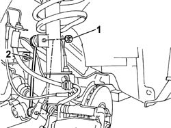

4410C11 ROD ANCHORING END OF FRONT SUSPENSION ANTI-ROLL BAR L/H OR R/H (ONE) - R+R
- Path
- Procedures > 44 SUSPENSION AND WHEELS > 4410 FRONT SUSPENSION > 4410C ANTI-ROLL BAR AND ANCHORAGE STRUTS > 4410C11 ROD ANCHORING END OF FRONT SUSPENSION ANTI-ROLL BAR L/H OR R/H (ONE) - R+R
- Kind
- repair procedure (removal / refitting; the operation number is the code)
- Applies to
- all engines; all production periods
- Interactive page
- https://sloeber94.github.io/elrnDB-fUlss/en/#/179007378
Applies to: all engines; all production periods
 Removing
Removing
 Refitting
Refitting- To remove the rod anchoring the end of the left anti-roll bar, proceed as described below.
- Position the vehicle on a lift.
Op. 4450B02 LEFT FRONT WHEEL R R
1. Undo the retaining nuts.
2. Remove the rod anchoring the end of the anti-roll bar.

Applies to: all engines; all production periods
- Proceed in the same way for the removal of the rod anchoring the end of the right anti-roll bar.
Applies to: all engines; all production periods
Refitting
Removing- To refit the rod anchoring the end of the left anti-roll bar, proceed as described below.
- Position the rod anchoring the end of the anti-roll bar.
- Tighten the fixing nuts to the recommended torque.
Value da Nm | Fastening | Component | Ø | |
|---|---|---|---|---|
- | 5.5 | Nut | REAR ANTI-ROLL BAR ANCHORAGE LINK | - |
Op. 4450B02 LEFT FRONT WHEEL R R
- Remove the vehicle from the lift.- [PR4450A10]
- Proceed in the same way for the refitting of the rod anchoring the end of the right anti-roll bar.